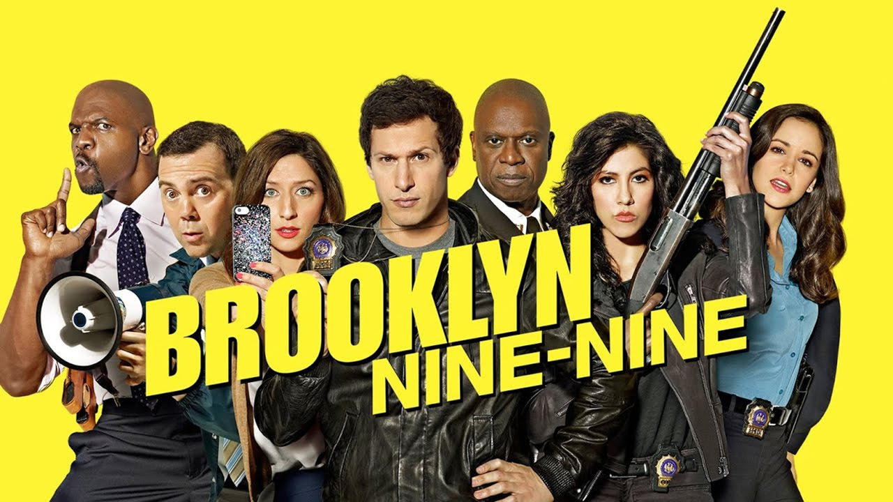

Brooklyn Nine-Nine
Brooklyn Nine-Nine
A série
Brooklyn Nine-Nine é uma série de televisão humorística americana criada por Dan Goor e Michael Schur, produzida e assinada pela NBC.
Sinopse
Brooklyn Nine-Nine é uma comédia policial dos produtores de The Office, mas, diferentemente da outra, não tem ninguém falando com a câmera. Inteligente, a série é uma sátira de todas as séries policiais que se tem na TV. Liderada pelo comediante Andy Samberg, que interpreta Jake Peralta (Samberg), um ótimo detetive, mas bastante imaturo. A vida dele e da delegacia muda quando o capitão Ray Holt chega na 99ª para faze-la a melhor delegacia do Brooklyn.